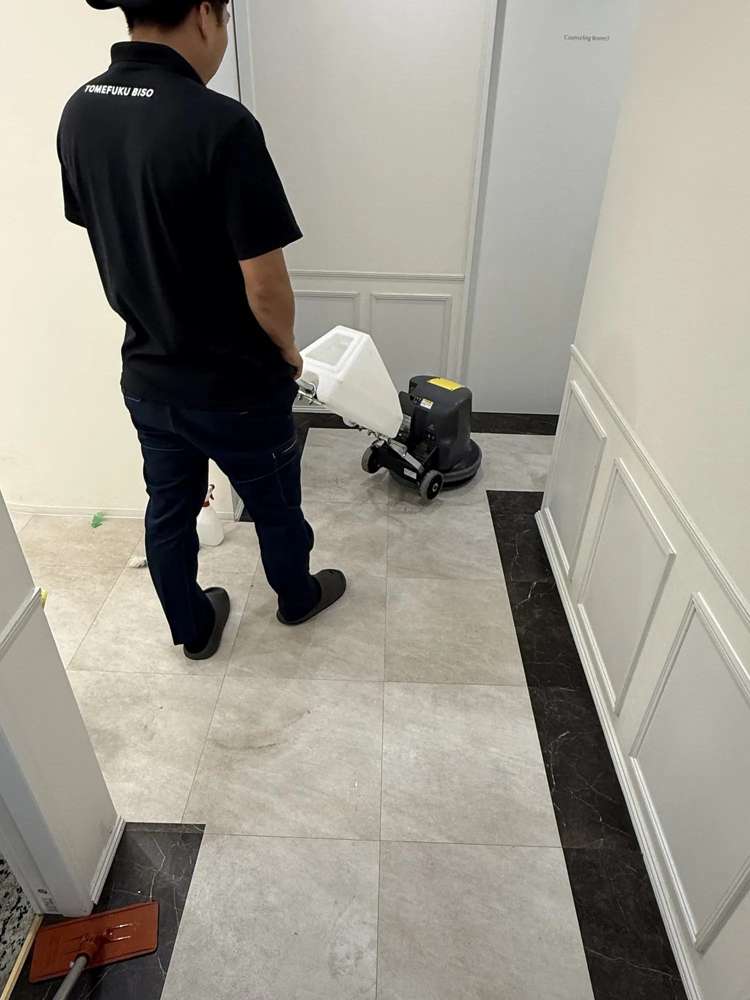
クリニックの
定期清掃・床清掃専門
関東の複数院を、窓口ひとつで一括管理。東京・埼玉を中心に、待合室・診察室の床洗浄・ワックス、剥離洗浄から業務用エアコン洗浄まで。休診日・夜間に作業し、診療を止めずに院内を整えます。
複数院を運営する医療法人・クリニック本部ご担当者様へ
院ごとにバラバラの清掃、
窓口ひとつにまとめませんか？
院の数だけ増えていく「清掃の管理業務」を、留福美装がまとめてお引き受けします。
こんなお悩みありませんか？
- 院ごとに清掃会社がバラバラ
- 院によって仕上がりに差がある
- いつ清掃したか把握できない
- 日程調整が各院の負担になっている
本部の清掃管理が、ここまでシンプルに
連絡・契約・日程調整が
院の数だけ発生
ご連絡は1か所だけ。
全院を同じ基準で清掃
留福美装が、本部の手間を引き受けます
窓口をひとつに
依頼・日程調整・問い合わせは、同じ担当が全院分まとめて対応。新規開院も電話一本で追加できます。
定期清掃を当社で管理
院ごとの実施時期を当社で管理し、時期が来たらご案内。やり忘れがなくなります。
写真付き作業報告書
毎回BEFORE/AFTER写真付きの報告書をお送りします。現地に行かずに全院の状態を確認できます。
診療を止めない
夜間・休日の作業に対応。患者さんのいない時間に、院内を養生してから作業します。
何を頼めて、いくらか。
クリニック・医院・歯科医院向けの主な清掃メニューです。床清掃は面積・床材・汚れの状態によって金額が変わるため、現地確認(無料)のうえでお見積もりをご案内します。業務用エアコン洗浄は台数・機種ごとの料金です。
実績:関東で多院展開する美容クリニック様の全院を担当
医院様に選ばれる理由。
診療を止めない作業時間
休診日・診療終了後・夜間に作業します。ワックスの乾燥時間まで含めて、翌日の診療に影響しない日程を組みます。
明確な料金とお見積もり
作業前に金額と作業範囲をはっきりお伝えします。院長先生・事務長様が予算を立てやすい、面積別・月額プランでご提案します。
床もエアコンも一つの窓口で
床洗浄・ワックス、剥離洗浄、カーペット・ガラス清掃、業務用エアコン洗浄までまとめてお任せいただけます。分院ごとに異なる業者の管理の手間も減らせます。
多院展開クリニックの全院を担当
関東で多院展開する美容クリニック様の全院を担当しています。医療機器や院内のルールを尊重し、毎回同じ品質で仕上げます。
施工事例。
クリニック・医院での床洗浄、カーペット洗浄、業務用エアコン洗浄の施工事例です。施工事例は順次追加していきます。
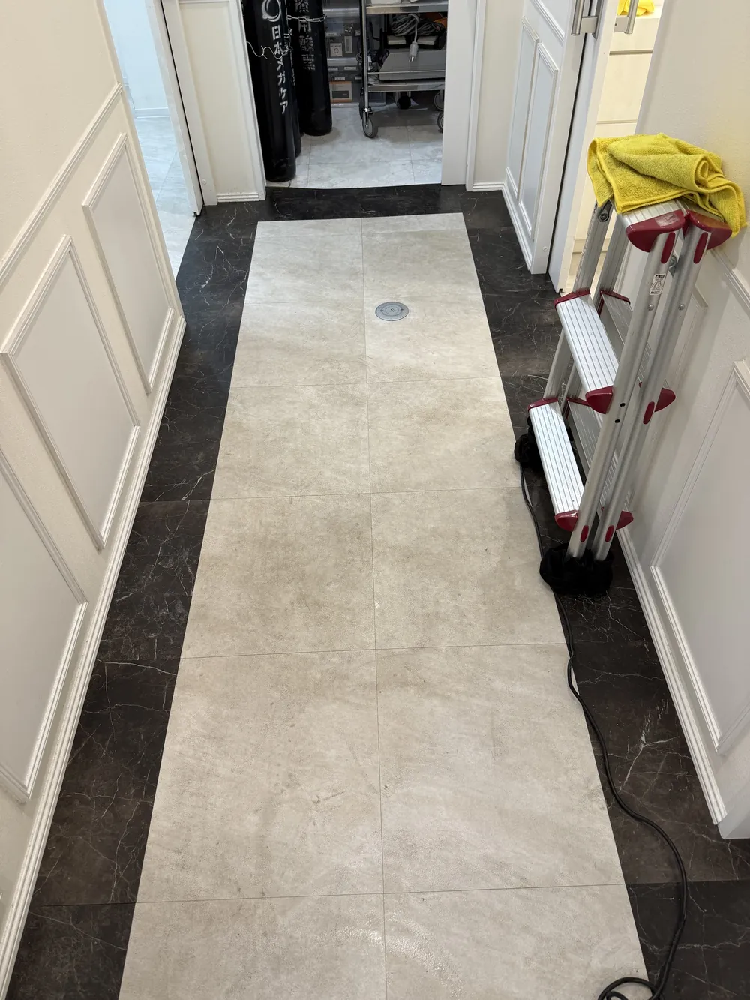
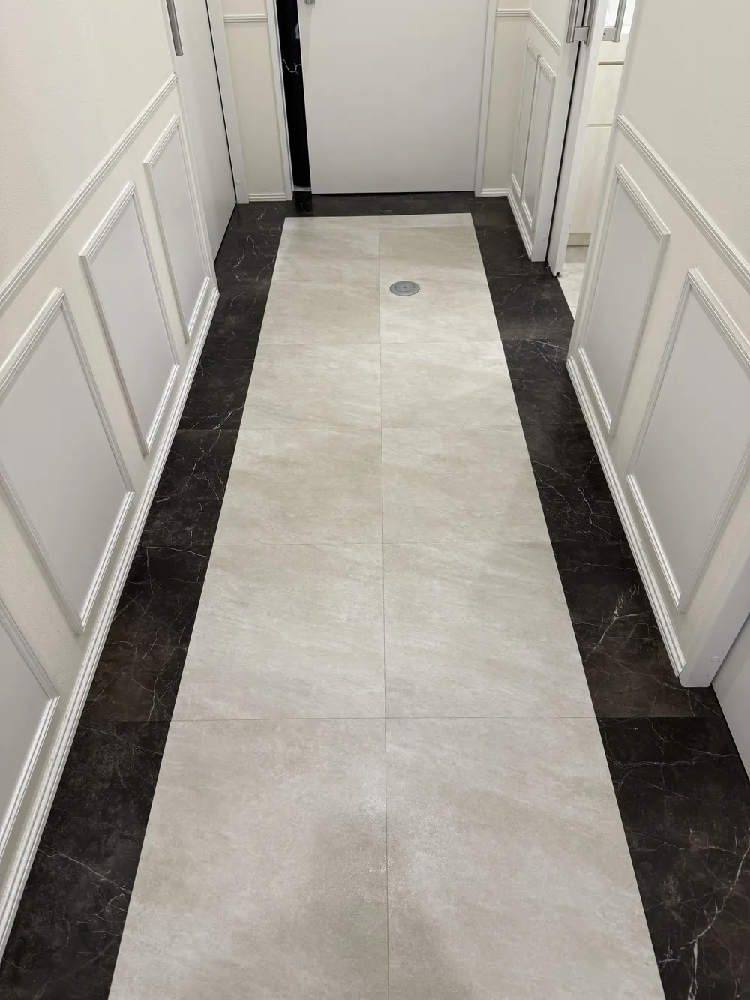
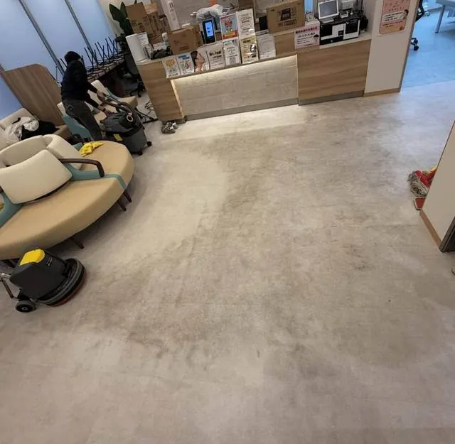
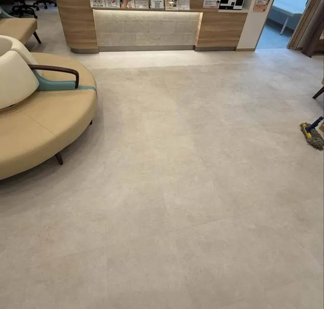
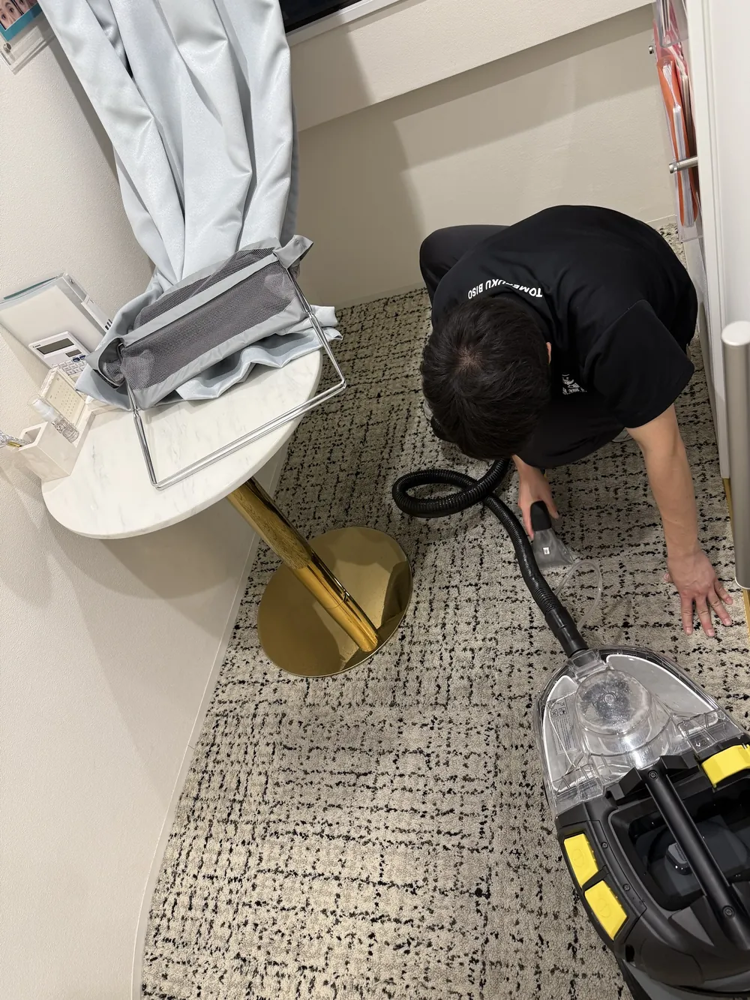
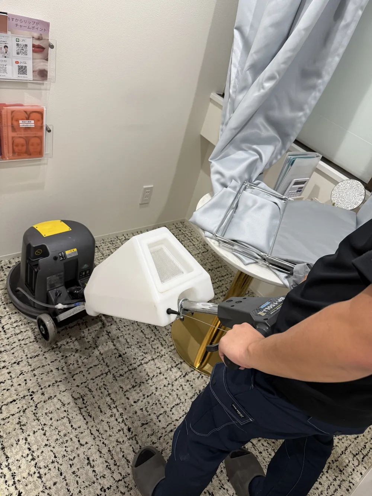
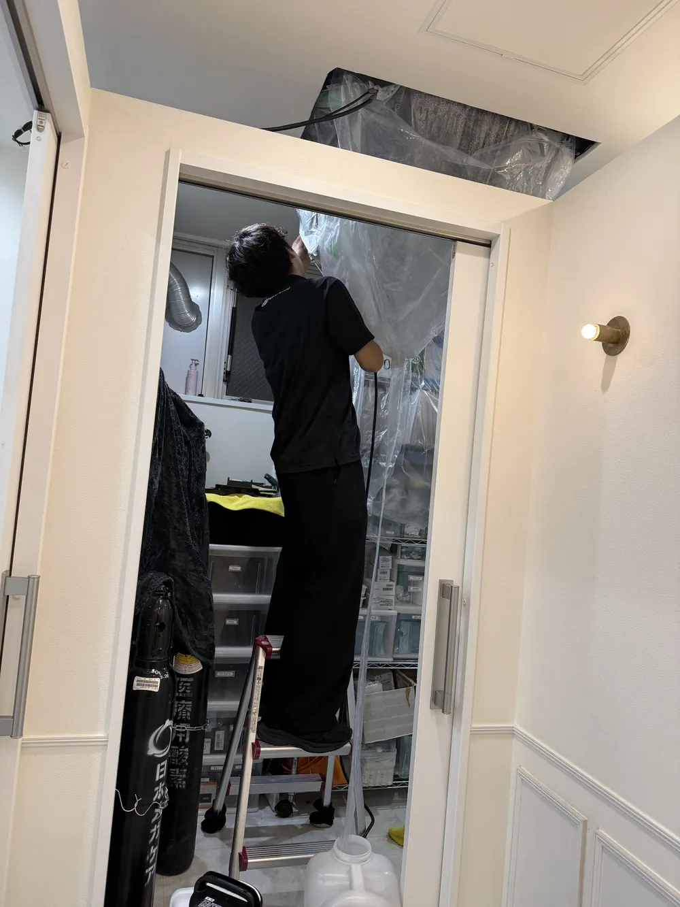
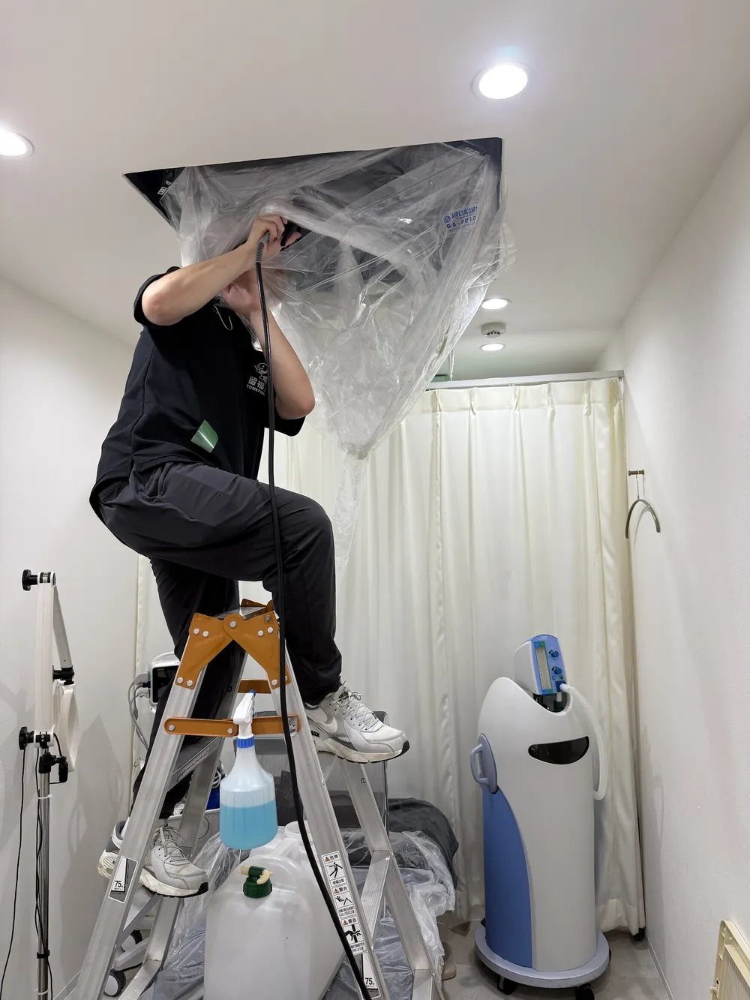
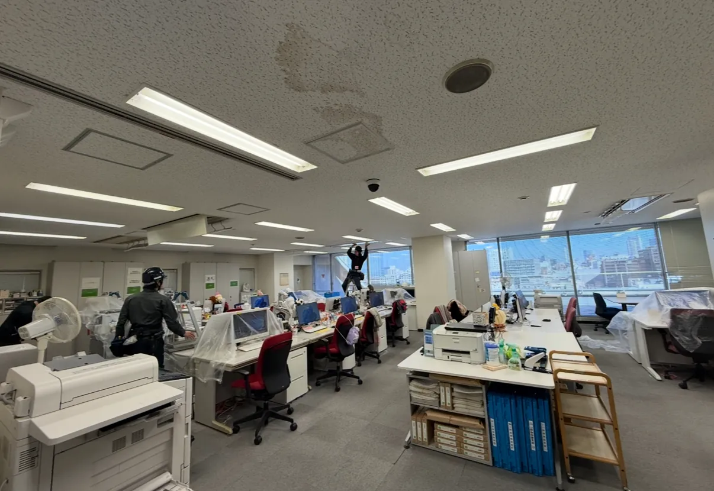
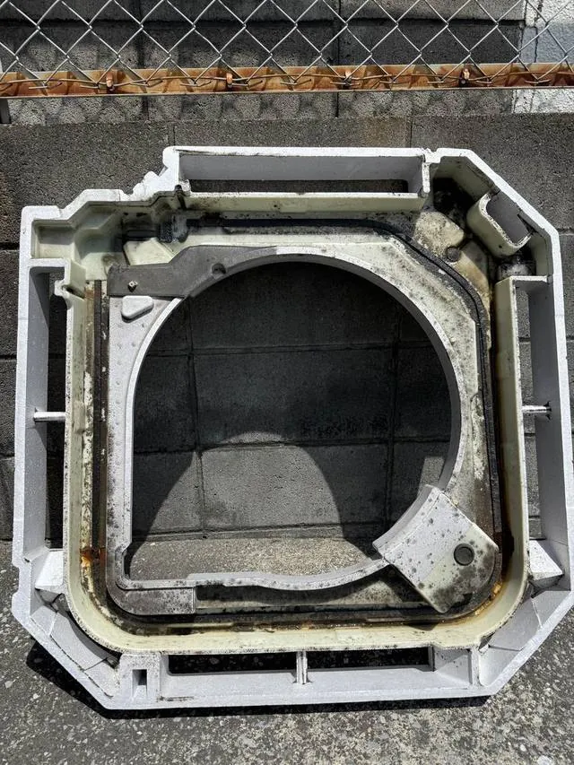
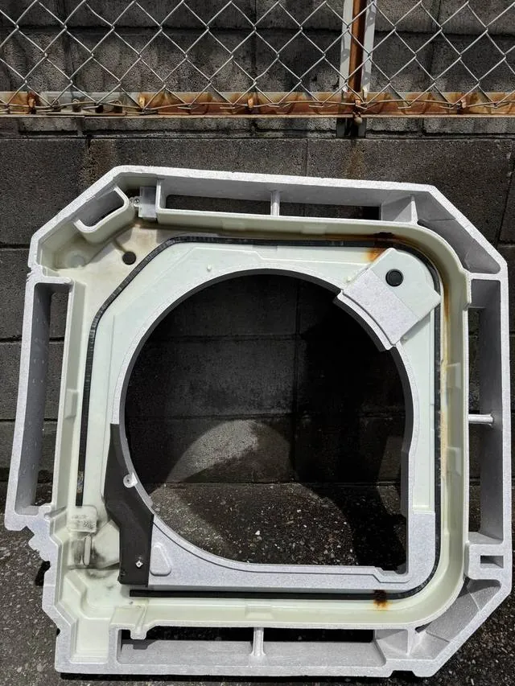
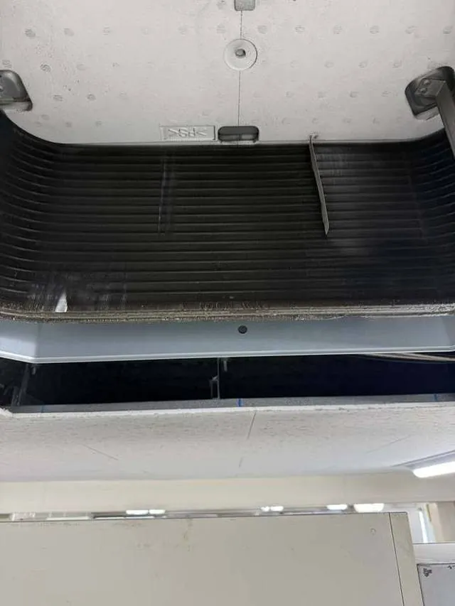
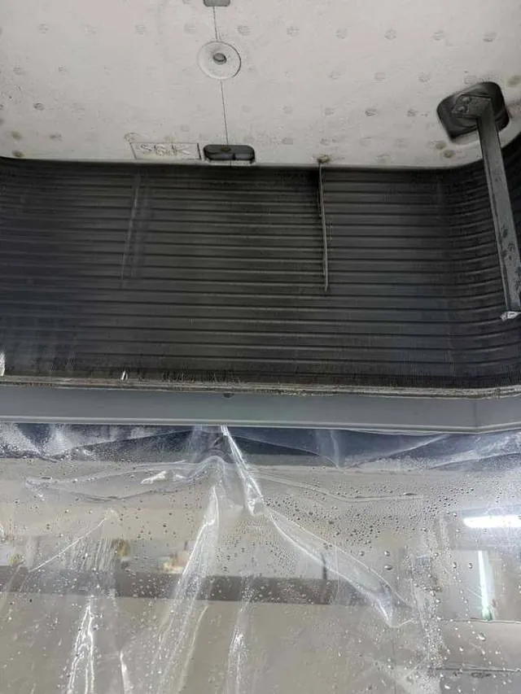
サービス詳細。
クリニック床洗浄・ワックス +
待合室・受付・診察室・処置室・廊下など、院内の床をポリッシャーで洗浄し、ワックスを塗布して保護します。床材(長尺シート・塩ビタイル・フローリング・石材調タイルなど)を確認し、素材に合った方法で仕上げます。
こんな医院様におすすめ
- 待合室の動線や受付前の黒ずみが気になる
- 日常のモップ拭きでは床のくすみが取れない
- 開院時のきれいな床の状態を保ちたい
作業内容
- 家具・備品の移動(動かせる範囲)と養生
- ポリッシャーによる床洗浄・汚水回収
- すすぎ・乾燥・ワックス塗布
- 備品の復旧・仕上がり確認
床剥離洗浄 +
古いワックスを剥離剤で取り除き、ワックス層に入り込んだ黒ずみや黄ばみごと床をリセットします。仕上げに新しいワックスを塗り重ねます。
こんな医院様におすすめ
- 通常の床洗浄では黒ずみが落ちなくなった
- 長年のワックスの重ね塗りで床が黄ばんでいる
- 清掃業者を変更するので、一度床を整えたい
クリニック定期清掃(月額プラン) +
床洗浄・ワックス、カーペット洗浄、ガラス清掃、エアコンフィルター清掃などを組み合わせ、毎月・隔月・3か月ごとなど決まった頻度で行います。
こんな医院様におすすめ
- 清掃の手配を毎回するのが手間になっている
- 年間の清掃費用を予算化しておきたい
- 分院も含めて清掃の品質をそろえたい
待合室・診察室の床清掃 +
来院者の出入りが集中する待合室・受付前と、スタッフの動きが多い診察室・処置室を中心に床を洗浄します。ソファや受付カウンターまわりなど、汚れのたまりやすい場所を重点的に仕上げます。
医院・歯科医院の定期清掃 +
ガラス清掃 +
業務用エアコン洗浄 +
天井埋込型・天吊り型の業務用エアコンを分解し、高圧洗浄します。診療時間外・夜間の作業に対応し、複数院の一括対応も可能です。
料金表
- 天井埋込型(業務用4方向):33,000円/台 (2台目以降 31,000円/台)
- 天吊り型(業務用):39,000円/台 (2台目以降 37,000円/台)
エアコンフィルター清掃 +
診療科目ごとのご案内。
歯科医院のユニットまわり、眼科の検査室、整形外科のリハビリ室、小児科のキッズスペース。診療科目によって床の汚れ方も、作業で気をつけることも変わります。科目ごとの清掃のポイントをまとめました。
診療科目から探す
清掃メニューから探す
分院ごとに清掃業者が異なると、日程調整や品質の管理に手間がかかります。複数院の清掃窓口を一本化したい本部・事務局のご担当者様もご相談ください。
固定 03-5050-5253
- クリニック・医院・歯科医院の定期清掃
- 床洗浄・ワックス・床剥離洗浄・カーペット洗浄
- ガラス清掃
- 業務用エアコン洗浄・エアコンフィルター清掃(複数台・複数院対応)
- 空室クリーニング・ハウスクリーニング・新築美装・原状回復工事など(留福美装 公式サイト)
現場の様子・口コミ。
診療時間外や夜間の清掃は可能ですか？ +
可能です。休診日・診療終了後・夜間など、診療に影響しない時間帯に作業します。これまでも美容クリニック様の床洗浄・カーペット洗浄・業務用エアコン洗浄を夜間に行っています。ワックスの乾燥時間も含め、翌日の診療に支障が出ない日程をご提案します。
クリニックの床清掃はどのくらいの頻度が必要ですか？ +
来院者数や床材、日常清掃の状況によって異なります。待合室など人の出入りが多い場所は1〜3か月に1回程度の床洗浄、年1回程度の剥離洗浄を一つの目安として、床の状態を確認したうえでご提案します。詳しくはコラム「クリニックの床清掃はどのくらいの頻度が必要？」をご覧ください。
定期清掃と日常清掃の違いは何ですか？ +
日常清掃は掃き掃除・モップ拭き・ゴミ回収など毎日行う清掃で、院内スタッフの方が行っている医院様も多くあります。定期清掃は、ポリッシャーによる床洗浄やワックス塗布、カーペット洗浄など、専用の機材と洗剤を使って月1回〜数か月に1回行う清掃です。留福美装は定期清掃を中心にお受けしています。
床の黒ずみや汚れは改善できますか？ +
床の表面やワックス層に付いた黒ずみは、床洗浄や剥離洗浄で改善できる場合が多くあります。ただし、床材そのものの傷・変色・薬剤による変質は落としきれないことがあります。現地で状態を確認し、改善が見込める範囲を事前にご説明します。
医療機器や薬品がある部屋も清掃してもらえますか？ +
清掃できます。医療機器は動かさず、作業範囲と養生する場所を事前に確認してから作業します。立ち入りできない部屋や清掃の手順など、院内のルールがあれば事前にお知らせください。
料金はどのように決まりますか？見積もりは無料ですか？ +
床清掃は面積・床材・汚れの状態・作業時間帯によって決まるため、現地確認のうえでお見積もりします。お見積もりは無料です。業務用エアコン洗浄は1台33,000円(税込)〜、フィルター清掃は1台3,300円(税込)です。詳しくは料金ページをご覧ください。
今の清掃業者から変更する場合、どのような流れになりますか？ +
お問い合わせ後、現地で床の状態や清掃範囲を確認し、お見積もりと清掃計画をご提案します。現在の契約期間や解約時期を踏まえて開始日を決め、必要に応じて初回に剥離洗浄で床を整えてから定期清掃を始めます。
床清掃と業務用エアコン洗浄をまとめて依頼できますか？ +
まとめてご依頼いただけます。床洗浄・ワックス、カーペット洗浄、ガラス清掃、業務用エアコン洗浄・フィルター清掃を一つの窓口でお受けできるため、業者ごとの日程調整の手間を減らせます。
複数の院(分院)をまとめて依頼できますか？ +
可能です。関東で多院展開する美容クリニック様の全院を担当しています。院ごとに日程を分けることも、全院共通の計画でまとめて手配することもできます。
対応エリアを教えてください。 +
埼玉県(川口市・蕨市・戸田市・さいたま市・越谷市・草加市など)と東京都(足立区・北区・板橋区・豊島区・新宿区・渋谷区など)を中心に対応しています。その他の地域もご相談ください。詳しくは対応エリアをご覧ください。
まずはご相談ください。
医院・施設の場所、気になっている床の状態、ご希望の清掃内容と頻度をお聞かせください。現地確認のうえ、料金と作業内容をご案内します。お見積もりは無料です。
送信いただいた内容は留福美装に直接届きます。内容をご確認のうえ、折り返しご連絡いたします。